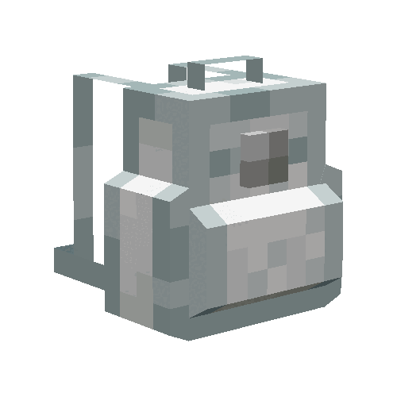
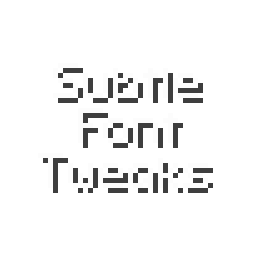

Welcome to
Monkey Studios
Very Professional Mods, Code, and Artwork
Creating Stuff and Eating Bananners!
See My Work!GitHub
Check out my really bad open-source code!
CurseForge
I host my work on CurseForge! Go check it out.
Modrinth
I also host on Modrinth's open-source platform.
About Monkey Studios
Monkey Studios began with a simple idea to make a mockup website and evolved into a small showcase of projects I’ve made,
Monkey Studios creates playful, bananatastic okay code, with a little monkey buisness 🍌.
From Minecraft mods to this website, it's monkey ran and powered by brute force and caffeine.
Featured Projects
Backpacked: World of Color
This is an add-on for Backpacked! Adds all 16 dyed variants to the Standard Backpack!
Subtle Font Tweaks
This subtle font pack makes lowercase letters smaller and rounder and centers capitalized letters for a brand new feel.
What People Are Saying
“I really like this marigold flower so much” - DukeWiteque
“I just want you to know that I really love this mod." - Apicella111
“possible to get this woking with the flower patch mod?" - lunchboxxx19
"I like this mod." - pizzapuddingapples
"nice one" - prickly_kirch99
"forge please" - furrein
Fun Stats
Total Downloads
Thats gotta be worth so many Bananas!!!
Contact
DM me on CurseForge if you need to! 🍌